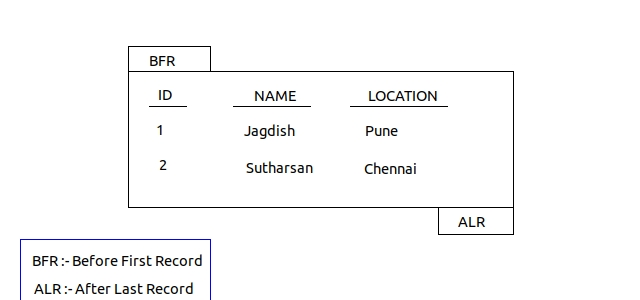

Tutorial Campus....!
JDBC Introduction
According to database software specification , there are 4 types of queries- DML (update, insert , delete)
- DRL (select queries.)
- DDL queries (create or alter table or drop table etc.)
- TCL (commit, rollback savepoint)
- When select queries are executed, they return bunch of records,and when non select
queries are executed they return one numeric value which is no. of records affected. - We use JDBC Statement object to send and execute queries in database software being
from java application. we can create this object based on connection object.
Statement st= connection.createStatement(); - use executeQuery() to send and execute sql select queries.
- use executeUpdate() to send and execute sql non-select queries.
- public static Connection getConnection(Stirng url, String username, String password)
- public Statement createStatement() throws SQLException
- public ResultSet executeQuery(String query) throws SQLException
- public int getInt(String collumnName or Index) throws SQLException
- public boolean next() throws SQLException
- public void close() throws SQLException
public class JdbcTest
{
public static void main(---)
{
//load jdbc driver class to register JDBC driver with DriverManager service.
Class.forName("Driver_Class_Name");
//establish connection with db software from java app.
Connection con=DriverManager.getConnection("hostname_and_service", username, password);
//create JDBC statement object.
Statement st=con.createStatement();
//send and execute sql select or update statement
ResutlSet rs=st.executeQuery("select * from student");
while(rs,next())
{
sop (rs.getInt(1)+" "+rs.getString(2)+" "+ rs.getString(3));
or
sop ( rs.getInt("sno")+" "+rs.getString("sname")+" "+rs.getString("slocation"))
}
or
it updatedRecords= st.executeQuery("update student set rollNo=10 where sname='Mangesh'");
sop ( updatedRecords +" records updated successfully");
rs.close(); //sequence of closing would be in decending order.
st.close();
con.close();
}//main
} //JdbcTest
ResultSet Object
- ResultSet object it is object of underlying jdbc driver supplied java class that implements java.sql.ResultSet interface.
- by default every ResultSet object contains BFR & ALR records . & record pointer / cursor reside in BFR position by default

- ResultSet have getXXX(). we can use collumn index or column name
- if we don't know what is datatype of the collumn in ResultSet then we can simply call
rs.getString(index/collumnName) method. - when we select specific collumns of db into RS object.
the collumn vlues will be stored in the ResultSet object in the order they are selected. - while retriving these values from ResultSet object, give collumn indexes
in which they are stored in ResultSet object and not in order they are there in database table. - if we try to get values from ResultSet object when it is closed , then we get SQLException.
Types of ResultSet
- TYPE_FORWARD_ONLY:
- The result set cannot be scrolled; its cursor moves forward only, from BFR row to ALR positions.
- The default ResultSet type is TYPE_FORWARD_ONLY
- TYPE_SCROLL_INSENSITIVE:
- The result can be scrolled; its cursor can move both forward and backward relative to the current position.
- The cursor can scroll forward and backward, and the result set is not sensitive to changes made by others to the database
that occur after the result set was created.
- TYPE_SCROLL_SENSITIVE:
- The cursor can scroll forward and backward, and the result set is sensitive to changes made by others to the database that occur after the result set was created.
st = con.createStatement(ResultSet.TYPE_SCROLL_SENSITIVE,ResultSet.CONCUR_READ_ONLY);
rs = st.executeQuery("select accno, bal from bank");
System.out.println("Cursor position is at BFR ? : "+rs.isBeforeFirst());
while(rs.next()){
System.out.println(rs.getInt(1)+" "+rs.getDouble(2));
}
//now result set cursor reached the last position
System.out.println("Cursor position is at ALR ?: "+rs.isAfterLast());
while(rs.previous()){
System.out.println(rs.getInt(1)+" "+rs.getDouble(2));
}
Note :- 1) ResultSet.CONCUR_READ_ONLY :- this property Creates a read-only result set. This is the default
2) ResultSet.CONCUR_UPDATABLE :- this property Creates an updateable result set.
Q)What is difference between toString() & printStackTrace() called on any exception object ?
- toString() gives only className of the exception that is raised.
- printStackTrace() displays the elaborated method details of the exception that is raiased.
Java method executes in stack memory, when exception is raised, Stack memory will be filled with exception
related messages. printStackTrace will display those messages only.
- System.out.println(--) supports output redirection to a file.
- System.error.println(--) doesent support output redirection.
- Yes, it is possible by calling execute() method. it will return true if executed query is select query and flase if executed query is non select.
- While working with this method we need to gather query execution result through seperate method calls.
if query returns 'true' then we can call getResultSet() method to get ResultSet object.
if query returns 'false' then we can call getUpdateCount() method to get no. of records that are affected in JDBC application.
boolean flag= st.execute(String sql)
if(flag)
{
ResultSet rs=st.getResultSet();
while(rs.next(0){...}
}
else
{
int updateCount=st.getUpdateCount();
sop ("no. of records updated are "+ updateCount);
}
Types Of JDBC Drivers
Type-1 driver- Vendor db library is provided by database softwares. so it is database specific. These could be in same language in which database software is written.
- ODBC drivers are database specific.
JDBC CODE---> Driver Manager Service ---> ODBC driver for database ----> Vendor db library for database ----> | NETWORK | ---> | DATABASE |
Type-2 driver
- these drivers eliminate ODBC drivers from architecture. and Vendor library is sufficient
to communicate with database.
Type-4 driver
- These drivers are known as thin drivers. vendor library is eliminated from this architecture.
- These type of drivers are java implementations.
JDBC CODE ---> Driver Manager Service ---> | NETWORK | ---> |DATABASE|
Type- 3 Driver
- These are connection pool factories , where connections are available to use directly.
PreparedStatement
Advantages of prepared statement are as follows.- Allows to eork on pre-compiled sql query.
- Allows to specify parameters (?) in query.
- Avoid sql injection problem.
- Allows to insert date, lob values.
- Suitable for executing same query for multiple times with same or different parameters.
- reduces network traffic between java app and db software.
- By preparing sql query for prepared statement object , we can take parameters in the query just representing input values & condition values that means we an't take params
representing sql keywords like taablenames & collumn names etc.
e.g.
1) select * ? userlist where user=? (invalid.)
2) select * from ? where user=? and pwd=? (invalid.)
Connection con=DriverManager.getConnection("jdbc:oracle:thin:@localhost:1521:xe","system","oracle");
PreparedStatement stmt=con.prepareStatement("insert into Emp values(?,?)");
stmt.setInt(1,101); //1 specifies the first parameter in the query
stmt.setString(2,"Ratan"); // we have setXXX(-) methods to set the values to the placeholders.
int i=stmt.executeUpdate(); // or executeQuery() for select queries.
System.out.println(i+" records inserted");
con.close();
Q) What is difference between java.util.Date & java.sql.Date
- java.util.Date can't be used for db operation. whereas java.sql.Date can be used for db operation.
- java.sql.Date dosen't have 0- param constructor and java.util.Date maintains 0- param constructor/ Default constructor.
- java.sql.Date is sub class of java.util.Date class.
Converting string date value to java.util.Date value
This is required when we are inserting date value in database.
String stringDate="21-02-2018" //dd-mm-yyyy
SimpleDateFormat sdf=new SimpleDateFormat("d-mm-yyyy");
java.util.Date utilDate= sdf.parse(s1);
once we have util.Date class object , we can convert it to sql.Date object.
long miliseconds= utilDate.getTime();
java.sql.Date sqlDate=new java.sql.Date(miliseconds);
note that if date stirng is in format "yyyy-mm-dd" then it can be converted directly to sqlDate
e.g. java.sql.Date sqlDate= java.sql.Date.valueOf("2018-10-20")
e.g. java.sql.Date sqlDate= java.sql.Date.valueOf("2018-10-20")
Converting date values to string values.
- This is required when we are retriving date form date collumn of database.
- ResultSet will give us java.sql.Date class object.
java.sql.Date sqlDate=rs.getDate(x-index)
//we will typecast to utilDate object. it is possible because there is base class-> subclass relationship.
java.util.Date utilDate=(java.util.Date) sqlDate;
//now we can covert utilDate object to string object as below.
SimpleDateFormat sdf=new SimpleDateFormat("dd-mm-yyyy");
String stringDate= sdf.format(utilDate);
to summerize :- parse(-) of java.text.SimpleDateFormat class convets given string to java.util.Date value.
& format(-) of java.text.SimpleDateFormat class converts given java.util.Date object to String date value.
Callable statements
A CallableStatement object provides a way to call stored procedures using JDBCSyntax:-
Connection con = null;
CallableStatement csmt = null;
try {
Class.forName("oracle.jdbc.driver.OracleDriver");
con = DriverManager.getConnection("jdbc:oracle:thin:@<hostname>:<port num>:<DB name>","user","password");
csmt = con.prepareCall("{call myprocedure(?,?)}");
csmt.setInt(1,200);
csmt.setDouble(2, 3000);
csmt.execute();
System.out.println("Executed stored procedure!!!");
} catch (ClassNotFoundException e) {
e.printStackTrace();
} catch (SQLException e) {
e.printStackTrace();
}
What if there is a parameter to be registered as out parameter in the procedure.
csmt = con.prepareCall("{call myprocedure(?,?)}");
csmt.setInt(1,200);
//below method used to register data type of the out parameter
csmt.registerOutParameter(2, Types.DOUBLE);
csmt.execute();
Double output = csmt.getDouble(2);
we can also make batch updates with callable statement.
csmt = con.prepareCall("{call myprocedure(?,?)}");
csmt.setInt(1,200);
csmt.setDouble(2, 3000);
csmt.addBatch(); //added first batch params.
csmt.setInt(1,130);
csmt.setDouble(2, 2000);
csmt.addBatch(); //added second batch params.
int[] updateCounts = csmt.executeBatch();
- we can also call database function by using callable statements.
- A function is a named PL/SQL Block which is similar to a procedure.
- The major difference between a procedure and a function is, a function must always return a value,
but a procedure may or may not return a value.
csmt = con.prepareCall("{?= call myfunction(?,?)}"); // note here we have total 3 params.
//below method used to register data type of the out parameter
csmt.registerOutParameter(1, Types.DOUBLE);
csmt.setInt(2,200);
csmt.setInt(3,3677);
csmt.execute();
Double output = csmt.getDouble(2);
We can also call database cursor to select records from database.
csmt = con.prepareCall("{call myCursorExmp(?,?)}");
csmt.setInt(1,200);
csmt.registerOutParameter(2, OracleTypes.CURSOR);
csmt.execute();
rs = (ResultSet)callSt.getObject(2);
JDBC Batch updates.
- JDBC Batch updates are useful to perform multiple DML operations at same time.
it will reduce connection opening and closing. - batch should not contain select query.
- batch operation can be performed using Statement or PreparedStatement.
1) Using Statement
Statement st;
st = con.createStatement();
st.addBatch("update emp set sal=3000 where empid=200");
st.addBatch("insert into emp values (100,4000)");
st.addBatch("update emp set emp name='Ram' where empid=345");
int count[] = st.executeBatch();
for(int i=1;i<=count.length;i++){
System.out.println("Query "+i+" has effected "+count[i]+" times");
}
2) Using PreparedStatement
con.setAutoCommit(false); // to manage transaction.
Boolean flag=false; // used to rollback transaction.
PreparedStatement pst=null;
pst = con.prepareStatement("update emp set sal=? where empid=?");
pst.setInt(1, 3000);
pst.setInt(2, 200);
pst.addBatch();
pst.setInt(1, 4000);
pst.setInt(2, 230);
pst.addBatch();
int count[] = pst.executeBatch();
for(int i=1;i<=count.length;i++){
System.out.println("Query "+i+" has effected "+count[i]+" times");
if(count[i]==0)
{
flag=true;
break;
}
if(flag==true)
{
con.rollback()
}
else{
con.commit();
}
}
ResultSetMetaData
ResultSetMetaData is an object that can be used to get information about the types and properties of the columns in a ResultSet object.
rs = st.executeQuery("select * from emp");
ResultSetMetaData rsmd = rs.getMetaData();
int columnCount = rsmd.getColumnCount();
for(int i=0;i<=columnCount;i++){
System.out.println(rsmd.getColumnName(i));
System.out.println(rsmd.getColumnType(i));
}
DatabaseMetaData
DatabaseMetaData is used to know which type of driver we are using and whether is it compatable or JDBC complaint or not.It is used to know all details about database provider as well.
DatabaseMetaData dm = con.getMetaData();
System.out.println(dm.getDriverVersion());
System.out.println(dm.getDriverName());
System.out.println(dm.getDatabaseProductName());
System.out.println(dm.getDatabaseProductVersion());
Stroring Large Objects (BLOB /CLOB) to database.
we can achieve this with help of PreparedStatement
PreparedStatement ps=null;
ps = con.prepareCall("insert into student_profile values (?,?)");
ps.setInt(1, 101);
File file=new File("Student_img.jpg");
int len=file.length();
InputStream is = new FileInputStream(file); //file object passed here
ps.setBinaryStream(2, is , len); // alternate is ps.setBLOB(2,is,len);
int count = ps.executeUpdate();
For Character Stream / CLOB use below ps.setCharacterStream(-,-,-) / ps.setCLOB(-,-,-);
Retriving BLOB from database.
InputStream is=null ;
if(rs.next())
{
is=rs.getBinaryStream(4);
FileOutputStream fos=new FileOutputStream("newPic.gif");
int bytesRead=0;
byte [] buffer = new byte[4096];
while(( bytesRead=is.read(buffer))!=-1)
{
fos.write(buffer,0,bytesRead);
}
}
Right Navigation...